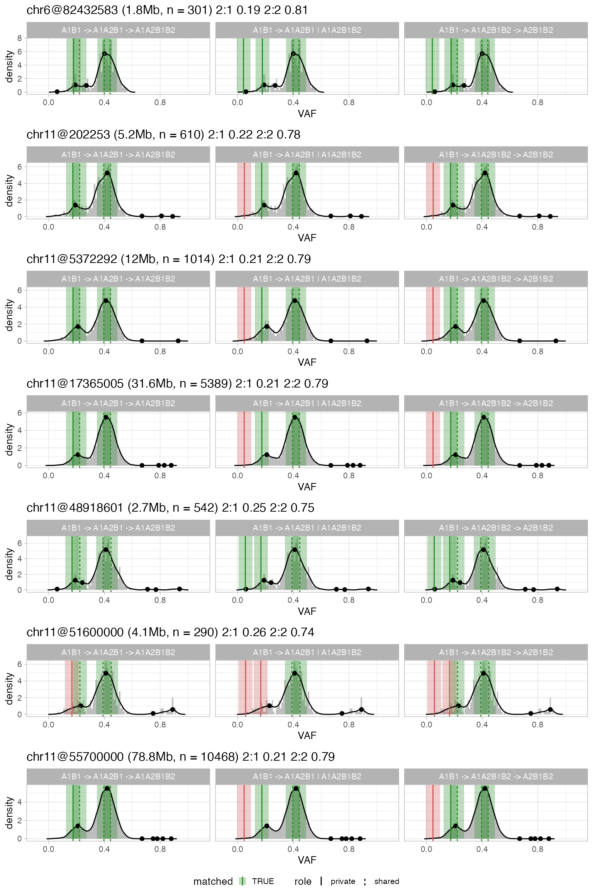

CNAqc can determine if purity and CNA segments “fit well” to mutation data, an hortogonal quality check (QC) metric that can be used to adjust purity/ ploidy.
CNAqc matches allelic imbalance of CNA segments to the allelic frequencies of somatic mutations. The package implements a karyotype-weighted linear score which uses the distance between data peaks (empirical), and their theoretical expectation. This score accouts for normal plodiy (germline), and tumour purity/ ploidy. The peaks are determined via kernel density estimation and peak-detection heuristics.
library(CNAqc)
#> ✓ Loading CNAqc, 'Copy Number Alteration quality check'. Support : <https://caravagn.github.io/CNAqc/>We work with the template dataset.
#> [ CNAqc - CNA Quality Check ]
#>
#> 2:2 [n = 7478] ■■■■■■■■■■■■■■■■■■■■■■■■■■■ { chr19:15292495:15292496:G:A }
#> 4:2 [n = 1893] ■■■■■■■
#> 3:2 [n = 1625] ■■■■■■
#> 2:1 [n = 1563] ■■■■■■ { chr2:179431633:179431634:C:T }
#> 3:0 [n = 312] ■Peak detection routines are implemented in function analyze_peaks.
The idea is as follows: a segment with \(m\) and \(M\) copies of the minor and major alleles is consistent to mutation data if the VAF distribution peaks at certain values, which we can compute. Profiling then of the VAF distribution with a peak-detection heuristic allows CNAqc to measure the if peaks match. Large deviance suggests usually wrong purity estimation.
Peak analysis
# Run default analysis
x = analyze_peaks(x)
#> ℹ Requested karyotypes 1:0, 1:1, 2:1, 2:0 and 2:2.
#> ℹ Found n = 9041 mutations in 2:2, 2:1 (skipping those with n < 657 mutations).
#> # A tibble: 4 x 12
#> mutation_multip… karyotype peak x y counts_per_bin discarded offset
#> <dbl> <chr> <dbl> <dbl> <dbl> <int> <lgl> <dbl>
#> 1 2 2:1 0.616 0.6 3.05 67 FALSE 0.0159
#> 2 1 2:1 0.308 0.31 3.6 58 FALSE -0.00204
#> 3 2 2:2 0.471 0.46 8.25 628 FALSE 0.0109
#> 4 1 2:2 0.235 0.24 0.81 63 FALSE -0.00455
#> # … with 4 more variables: matched <lgl>, weight <dbl>, score <dbl>, QC <chr>
#> ✓ Peak detection PASS with r = 0.00382516680220259 and tolerance e = 0.05CNAqc analyze LOH regions (A, AA), diploid regions (AB), and amplification regions (AAB, AABB). These correspond to '1:1', '2:1', '2:0' and '2:2' in “Major:minor” notation. Karyotypes are subset by their size (normalized for the number of input mutations), and by default karyotypes smaller than 5% of the actual mutational burden are not considered
A Kernel-density method (unitary adjustment, Gaussian kernel) is used to smooth the data distribution, and the peakPick: Peak Picking Methods Inspired by Biological Data package is used to determine peaks in the smoothed density. Peaks below a mnimum density (noise and miscalled segments) are filtered, and the others are matched to a predefined location with some tolerance (e.g., plus/minus 0.5 * epsilon, where epsilon = 0.015 is the default).
Theis analysis produces a set of scores that account for karyotype size and peaks offset, and that can be combined into a linear model to compute an overall QC metrics, called rho.
print(x)
#> ── [ CNAqc ] n = 13141 mutations in 267 segments (267 clonal + 0 subclonal). Genome reference: hg19. ────────────────────────────
#>
#> 2:2 [n = 7478] ■■■■■■■■■■■■■■■■■■■■■■■■■■■ { chr19:15292495:15292496:G:A }
#> 4:2 [n = 1893] ■■■■■■■
#> 3:2 [n = 1625] ■■■■■■
#> 2:1 [n = 1563] ■■■■■■ { chr2:179431633:179431634:C:T }
#> 3:0 [n = 312] ■
#> ℹ Sample Purity: 89% ~ Ploidy: 4.
#> ℹ Mutations annotated have 3 drivers.
#> ✓ QC via peak detection available, score: 0.00382516680220259.
#> # A tibble: 4 x 12
#> mutation_multip… karyotype peak x y counts_per_bin discarded offset
#> <dbl> <chr> <dbl> <dbl> <dbl> <int> <lgl> <dbl>
#> 1 2 2:1 0.616 0.6 3.05 67 FALSE 0.0159
#> 2 1 2:1 0.308 0.31 3.6 58 FALSE -0.00204
#> 3 2 2:2 0.471 0.46 8.25 628 FALSE 0.0109
#> 4 1 2:2 0.235 0.24 0.81 63 FALSE -0.00455
#> # … with 4 more variables: matched <lgl>, weight <dbl>, score <dbl>, QC <chr>A summary table is stored inside the named list peaks_analysis.
Plotting results
For every karyotype, a plot with the estimated KDE and the matched peaks is available (assembled ggpubr figure with); gray panels represent karyotypes that have not been used.

Individual karyotypes plots are available inside the named lists peaks_analysis$plots, named afte each required karyotype.
You can integrate plots from QC analysis with data.
cowplot::plot_grid(
plot_peaks_analysis(x),
plot_segments(x),
rel_heights = c(.8, 1),
nrow = 2
)
#> Scale for 'fill' is already present. Adding another scale for 'fill', which
#> will replace the existing scale.
Summary results and Quality Check (QC)
The summary technical table is available as peaks_analysis$matches inside x.
x$peaks_analysis$matches
#> # A tibble: 4 x 12
#> mutation_multip… karyotype peak x y counts_per_bin discarded offset
#> <dbl> <chr> <dbl> <dbl> <dbl> <int> <lgl> <dbl>
#> 1 2 2:1 0.616 0.6 3.05 67 FALSE 0.0159
#> 2 1 2:1 0.308 0.31 3.6 58 FALSE -0.00204
#> 3 2 2:2 0.471 0.46 8.25 628 FALSE 0.0109
#> 4 1 2:2 0.235 0.24 0.81 63 FALSE -0.00455
#> # … with 4 more variables: matched <lgl>, weight <dbl>, score <dbl>, QC <chr>The table reports several information. The following might be of some use after the analysis:
-
mutation_multiplicityandkaryotype, which are the number of copies of the mutation, and the segment’s karyotype. Each segment withdiscarded = FALSEhas been analysed; -
peak,x,yreport where the expected peak should be found, and where it has been found (xandy); -
offset,weightandscorethat report the factors of the finalscore; -
QCthat reports if the peak is considered matched.
The overall QC result - "PASS"/"FAIL" - is available in x.
You can visually summarise the result of the QC analysis, for both peaks and CCF computation.

Here since CCF have not been computed, the only available QC tests are for peak-detection.